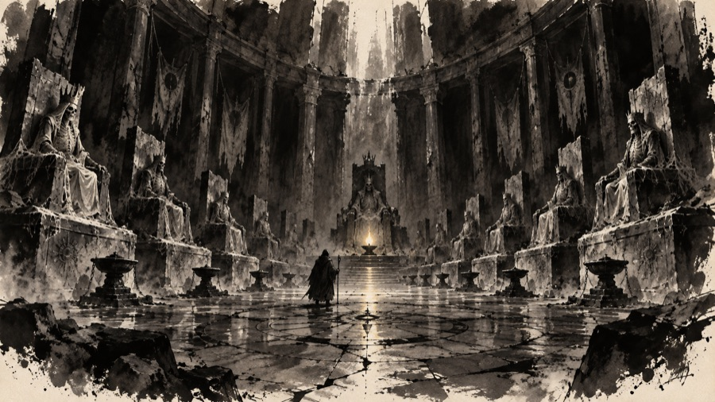
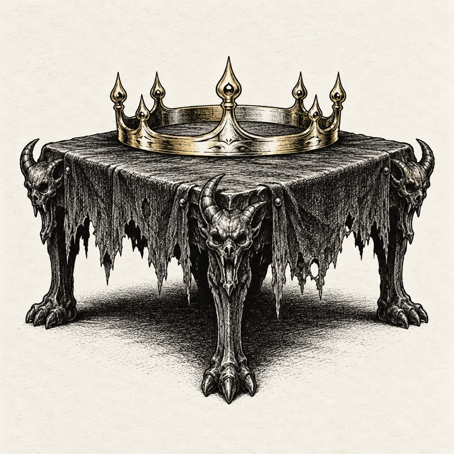

Rulers and heroes

Draft. The Lamp Kings of Aurenhold, the Keepers, the founders of Lanternhollow, and the heroes whose names are on the artifacts. Fallen heroes who became monsters are in Bestiary; they are cross-referenced here.
The First Keeper

Caedra (about 2620 to 2100 BH, if the dates are right, which would make her over five hundred years old; the Order says the flame kept her). A lamplighter from the coast who walked into the Breath with a lantern and came out knowing what was below. She founded the Order of the Lamp, planned the Lampway, and spent her long life building it. At the end she carried her lantern down to the Ring of Glass, lit every ring on the way, and did not come back.
She is the only Lampwarden ever to hold the rank Lamp of the Deep. Her lantern was not the first lamp (far older lamps exist), but it was lit from the First Lamp itself, which made it the Order's greatest relic. It was later found in the Ring of Forges, still burning, though she carried it much deeper; how it came back up, no one knows.
The Lamp Kings of Aurenhold


Twenty-six kings and queens over about 1,700 years. Each was crowned by the Keepers and sworn to keep the Oil Tithe flowing down the Lampway, and each was buried in the Ring of Rest with a lamp, as a warden in death. A selection:
| Ruler | Reign (approx.) | Remembered for |
|---|---|---|
| Aldren the Kindler | 2090–2041 BH | First king. Took the Keepers' condition and made it the kingdom's law: the Oil Tithe. |
| Hollis the Mason | 1910–1862 BH | Built the Hollow Gate and the lamplighters' road through the rings. |
| Aenne the Generous | 1760–1722 BH | Gave the Collegium of Sparks its charter and its first house. |
| Queen Tamsin the Wise | 1520–1471 BH | Had the great Mirror made that showed the rings below. Ruled through the best years of the kingdom. |
| Corran the Stern | 1305–1270 BH | Raised the Marrow Guard to stand watch in the Ring of Rest. |
| Halde the Twice-Crowned | 1180–1141 BH | Lost the throne to a cousin, won it back, and spent both reigns fighting over it. |
| Merrow the Proud | 1012–981 BH | Spent the Oil Tithe on a war with the hill clans. The beginning of the Long Dusk. |
| Oswy the Faithful | 668–640 BH | Went down himself to relight his fathers' lamps and drowned when the river broke into the Ring of Rest. Now the Drowned King. |
| Ysmer the Last | 431–412 BH | Staked the kingdom on a game of dice with Duke Ashvane and lost. Fled; no one knows where he died, or if. |
Princess Lisette, Oswy's granddaughter, never reigned. Her betrothed, a captain of the Marrow Guard, went down to the Ring of Rest and did not return; on her wedding day she went down after him in her wedding dress. She is the Pale Bride.
Note for the game: the Lamp Kings in the crypts are its tomb kings, its mummified priests were their Keepers, and the skeleton knights were the Marrow Guard.
The Keepers after the Fall
- Brother Anselm Dimm (around 410 BH), who sealed the Hollow Gate and led the last Keepers to the hill temple.
- Mother Orla of the Tarrow (around 30 YH), who came to the miners' camp to warn them what they were digging, was laughed at, and stayed anyway to found the temple in Lanternhollow.
- Sister Vesper (fell 911 YH), the Keeper who put out the temple's lamps (see the bestiary).
- Sister Ilvane (now), senior Keeper and keeper of the Eternal Lamp. She sent out the call of 1206 YH.
The founders of Lanternhollow
- Marla Tunnick (0 YH), the prospector who found the glow crystals and named the camp. Her statue in the square holds a lantern that the lamplighters keep lit.
- The first council of Lanternhollow: a miner, a Stonekin mason, a Burrowfolk grandmother, a Tinkerling lampmaker and a Keeper. The council still has those five seats by custom.
- Councillor Pell Arran (640 YH), who wrote the Delving Charter after the Collapse and saved the town by turning it into a delvers' town.
Heroes of song
These are the names behind the game's six artifacts, and the stories delvers tell at the Last Lamp inn.
- Ithrel Silverstring, Sylvan archer (around 1150 BH). Strung Starfall with silver drawn from starlight caught in a Greenroof bowl, and shot a shade off the Ring of Stone's walls from three hundred paces. Every generation of Sylvan archers who comes to Lanternhollow comes by her promise.
- Dame Orsolya Vell, Oathknight (around 300 BH). Carried Embersong, forged for the Order by the Ashborn at the Anvil of the Pact, into the Ring of Rest after the Fall and cut her way to the tomb of Aldren the Kindler to relight his lamp. The blade came back without her.
- Thane Gorran Deephall, Stonekin (around 2400 BH). Cut the Ring of Stone's great halls and wore the Stonehelm of the Deep Halls, carved from one block of the first stone that held light. The Deephall clans want it back.
- "Nobody" Quill, Delver (around 700 YH). The only delver ever to rob Brassle & Vane's vault (before it fell), in the Mantle of Quiet Steps. The Quiet Hand counts her as its founder, and denies she ever existed.
- Wren Hallow, Burrowfolk runner (around 1200 BH). Carried word of a failing ring from the Ring of Glass to the surface in a single night, wearing the Band of Swift Feet; the ring was relit in time. The band makes the world seem slow; Wren said it also made the world seem lonely.
- Caedra, whose lantern is the Lantern of the First Keeper.
Fallen heroes
Some of the Deep's named monsters were heroes, or something like it, once. Their stories are in the bestiary: the Drowned King (King Oswy), the Pale Bride (Princess Lisette), Sister Vesper (a Keeper), Skarth the Unsleeping (a Collegium scholar), Grimsby Coldhand (a Collegium master), Ysolde of the Ashes (a mage who freed herself), Rimeheart (a Cragborn's frozen cousin) and Ironjaw (a guardian with nothing left to guard).